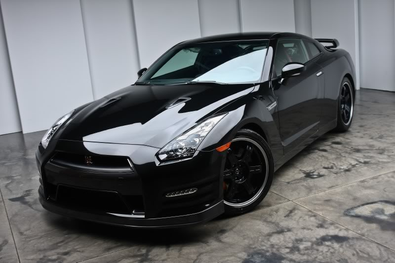

Dream Car 1
Dream Car 2

All images are not owned by me.
Source of the Nissan GT-R: Luxury4play
Link: http://www.luxury4play.com/asian-auto/93216-fs-thomas-classics-nissan-gt-r-black-edition.html
Source of Dodge Challenger: Pinterest
Link: https://nz.pinterest.com/pin/363665738637034868/